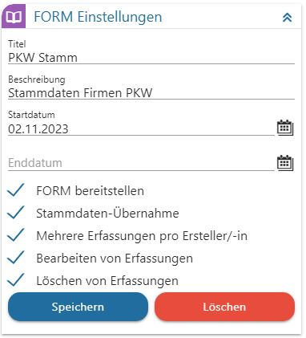
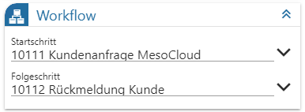
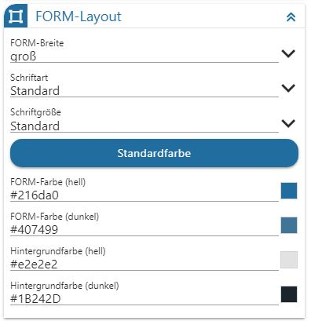
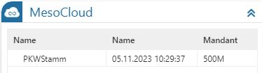

Wenn ein neues FORM oder Multi FORM erstellt wird, oder wenn der Einstellungen-Button (Zahnräder Symbol) beim Bearbeiten eines FORMs angeklickt wird, können folgende Einstellungen vorgenommen werden.

Ø Titel
Hier kann der Titel des FORM eingegeben werden. Über diesen Titel kann das FORM auch in weiterer Folge wieder aufgerufen werden. Der Titel des FORM ist eindeutig und darf nicht mehrfach vergeben werden (das wird dann beim Speichern mit einer Fehlermeldung abgelehnt).
Ø Beschreibung
In diesem Feld kann eine erweiterte Beschreibung des FORM hinterlegt werden.
Ø Startdatum / Enddatum
Als "Startdatum" wird das Tagesdatum vorgeschlagen, welches über das Kalendersymbol geändert werden kann. Das "Enddatum" kann in gleicher Weise hinterlegt werden. Damit kann die Gültigkeit des FORM definiert werden. Das FORM wird im DataCenter auch nur angeboten, wenn das Startdatum in der Vergangenheit und das Enddatum in der Zukunft liegt.
Ø FORM bereitstellen
Standardmäßig ist die Option aktiviert und damit können alle berechtigten Personen auf das FORM zugreifen. Ist die Option deaktiviert, dann kann das FORM nur vom Ersteller gesehen / bearbeitet werden. Erst mit Aktivieren der Option ist das FORM dann für Berechtigte sichtbar.
Ø Stammdaten-Übernahme
Wird diese Checkbox aktiviert und existieren zwischen FORM-Feldern und dem aufgeführten WinLine-Objekt (bzw. zugehörigen WinLine-Variablen) bezugnehmende Verknüpfungen, so kann die Stammdaten-Übernahme von FORM-Datensätzen für folgende Stammdaten durchgeführt werden:
ü Personenkonten*
ü Sachkonten*
ü Interessenten*
ü Artikel*
ü Arbeitnehmer*
ü Kontakte
ü Anlagen
ü Kostenstellen
ü Kostenarten
ü Kostenträger
ü Projekte
ü Mitarbeiter*
Hinweis
Bei den mit * gekennzeichneten Vorlagentypen können in der FORM auch Zusatzfelder zugeordnet werden.
Die im weiteren Verlauf benötigte Vorlage für die FORM – Stammdaten-Übernahme wird dabei parallel bei der Gestaltung der FORM über die definierten Verknüpfungen angelegt und kann in der WinLine über den nachfolgend aufgeführten Menüpunkt bearbeitet werden:
1 WinLine START
1 Vorlagen Anlage
1 FORM – Stammdaten-Übernahme
Das Durchführen der Übernahme erfolgt innerhalb der o. a. Stammdaten, indem aus dem jeweiligen Konten-Matchcode-Fenster heraus der Ribbon-Button "FORM Datenanlage" selektiert wird.
Ø Mehrere Erfassungen pro Ersteller/-in
Mit dieser Option kann gesteuert werden, ob ein Benutzer mehrere Datensätze erfassen kann oder nicht. Wobei der Einsatz der Option auch davon abhängt, was mit dem FORM erreicht werden soll: bei einer klassischen Umfrage wird die Option nicht gesetzt sein, weil jeder Mitwirkende soll nur eine "Meinung" abgeben, wenn das FORM z.B. als Stammdatenverwaltung eingesetzt wird, dann wird es ggf. notwendig sein, mehrere Datensätze erfassen zu können.
Ø Bearbeiten von Erfassungen
Mit dieser Option kann gesteuert werden, ob erfasste Daten nochmals bearbeitet werden können oder nicht. Auch hier wird es immer abhängig von der Art des FORM sein, ob diese Option gesetzt werden soll oder nicht.
Ø Löschen von Erfassungen
Wenn diese Option gesetzt ist, dann können erfasste Datensätze auch wieder gelöscht werden.
Der Button "Speichern" speichert die hinterlegten Einstellungen. Gelöscht werden nicht mehr benötigte Vorlagen über den Button "Löschen".

Workflow
Über das Arbeiten mit WinLine FORM können ebenso bestehende Workflow-Startschritte, bzw. Folgeschritte implementiert werden.
Ø Startschritt
Über die Selektion kann hier nur die Auswahl eines Startschrittes erfolgen. Der hier hinterlegte Schritt wird dann ausgeführt und erstellt, wenn in der FORM ein Datensatz erstellt wird.
Ø Folgeschritt
Nachdem unter "Startschritt" eben dieser selektiert wurde, stehen im Bereich "Folgeschritt" zugehörige WF-Folgeschritte zur Auswahl. Ein hier hinterlegter Folgeschritt wird aus der FORM heraus immer dann geschrieben, wenn ein bestehender FORM-Datensatz bearbeitet wird.
Hinweise zur Workflowimplementierung innerhalb der WinLine FORM
Für die korrekte Übergabe der Informationen und das Schreiben des Workflows bedarf es innerhalb des Workflows im entsprechenden WF-Schritt einer individuellen CRM-Vorlage. Diese muss innerhalb der WinLine START > Vorlagen Anlage als WebService-Vorlage definiert worden sein (inkl. der benötigten Variablen "Workflow Nummer" und "Zeilennummer").
Das Schreiben von Folgeschritten über das Bearbeiten eines FORM Datensatzes innerhalb der MesoCloud ist nicht möglich. Der volle Funktionsumfang steht derzeit innerhalb des FORM DataCenters zur Verfügung.

FORM-Layout
Im Bereich FORM-Layout können Einstellung bezüglich der Schriften und Farben Für die Formularauswahl "Formular", "Multi FORM" und "individuelles Formular" getätigt werden.
Ø FORM-Breite
Es kann gewählt werden zwischen klein, mittel, groß und max. Breite
Ø Schriftart
es wird Standard vorgeschlagen, über das Icon  ist aus einer Liste mit diversen
Schriftarten eine Änderung vorzunehmen
ist aus einer Liste mit diversen
Schriftarten eine Änderung vorzunehmen
Ø Schriftgröße
es wird Standard vorgeschlagen, über das Icon ist aus einer Liste mit diversen
Schriftarten eine Änderung vorzunehmen
Ø FORM-Farbe
aufgegliedert in Hell und Dunkel, anpassbar an das jeweils genutzte Grunddesign. Die gewählten Farben kommen zum Tragen in den Elementen Checkbox, RadioButton, Slider, Scrollbar, Panel Group und diversen mehr. Sie kann durch die Farbtabelle geändert werden. Wird eine RGB-Farbnummer eingetragen, so wird diese automatisch in eine HEX-Farb-Nummer umgewandelt und ausgewiesen. Voreingestellt sind die jeweiligen WinLine Grundfarben.
Ø Hintergrundfarbe
Die hier gewählte Farbe, gegliedert in Hell und Dunkel (anpassbar an das jeweils gewählte Grunddesign) kommt bei allem, beim Grundelement ist zum Einsatz. Wird eine RGB-Farbnummer eingetragen, so wird diese automatisch in eine HEX-Farb-Nummer umgewandelt und ausgewiesen.
MesoCloud

Sobald eine FORM oder Multi FORM erfolgreich gespeichert wurde, sind in diesem Bereich die Speicherinformationen für welchen Mandanten, an welchem Tag, Monat, Jahr und Uhrzeit und unter welchem Namen zu entnehmen. Diese Einstellung ist für "Formular" und "Multi FORM" möglich.
Hinweis
Der Speicher-Button innerhalb der FORM-Einstellung speichert ausschließlich die FORM-Einstellungen. Die in diesem Fenster hinterlegten Schlüsselungen FORM-Layout werden ausschließlich durch den Speicher-Button in der Ribbonleiste bzw durch die F5-Taste gespeichert.